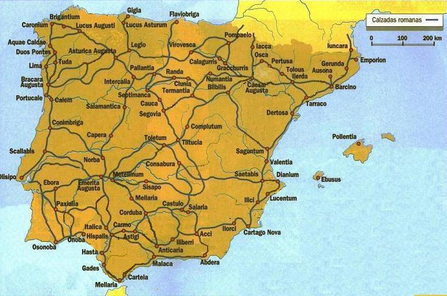

|
 |
Los romanos construían tres tipos de caminos estratégicos (viae): los llamados stratis lapidibus o enlosados, los afirmados o injecta glarea y los sencillamente aplanados o terrenea.
Siculus Flacus, Surveyor Roman
(mensor) del siglo I, clasifica las calzadas en: Las calzadas inicialmente se utilizaban para facilitar el avance o desplazamiento de las legiones romanas, rápidamente se aprovecharon para fines administrativos y comerciales. Las calzadas principales eran financiadas por el Estado, y las secundarias se costeaban por los municipios afectados. A lo largo de las calzadas, cada 20 ó 25 millas romanas, se construían mansiones, lugares de descanso y cambio de caballerías. Existen documentos que aportan datos sobre la red de calzadas existentes en tiempos del Imperio Romano el más conocido es el "Itinerarium provinciarum Antonini Augusti", conocido como el Itinerario de Antonino, del año 280, de autor desconocido. Recoge las 372 vías más importantes desde Roma a los puntos más alejados del Imperio, consignando las mansiones existentes y las distancias entre ellas, totalizando unos 90.000.-km. De este mapa 34 vías corresponden a la Hispania, con 10.300.- km de longitud. Otro documento es el libro III de su Geografía, Estrabón (63 a.e.c. – 19) describe ya una red de calzadas de algo más de 2.000 kilómetros en Hispania.
Uno de los documentos más importantes es la tabula Peutingeriana, es una especie de mapa mundi del siglo IV, utilizado por un geógrafo anónimo de Rávena en el siglo VII, que recogen también algunos itinerarios en la península. Tiene una longitud de 6,80 m. por 33 cm. de altura.
Como se construían: El grupo de operarios principales estaba compuesto por el administrador de obras, curator operis, el contratista, maceps, el ingeniero, architectus, los obreros especializados, cementarius y los albañiles normales, structures. Para nivelar el terreno utilizaban un groma y un chorobates. Abrían dos surcos paralelos con un aratrum (arado) con 12m de separación; estos surcos eran las fossae (zanjas) y permitían conocer las condiciones del subsuelo. Si no era el adecuado se sustituía o reparaba, o se le hincaba fistucaciones, pilones de madera. Una vez consolidado el fondo, se añadía una capa de arena de 10 a 15cm de espesor llamada pavimentum en la que se encajaban las piedras del statumen con un grosor que variaba dependiendo del estado del suelo de 25 a 60cm. La aglomeración de las piedras se hacia con cal o arcilla. Después del statumen, se colocaba una segunda capa denominada rudus. Esta capa solía tener un grosor de 22cm y estaba compuesta de guijarros o piedras pequeñas, enlucidas con mortero de cal y compactadas con la pavicula o pisón. La tercera capa era la denominada nucleus, que consistía en un hormigón de gravilla y cal apagada. Se consolidaba con rodillo, cylindrus, y su espesor variaba de los extremos de 30cm al centro o agger de 45cm. La siguiente capa era la summa crusta o summun dorsum. Esta capa se colocaba sobre la anterior antes que esta fraguara. La capa se podía realizar con bloques de piedras poligonales con forma regular o irregular, opus incertum; en otros casos la capa era de hormigón con bloques de esquisto colocados de canto o simplemente de grava. El espesor total de la calzada era de 90 a 145cm y su anchura entre cunetas era de 10,80m. Además poseía los crepedines, bordillos laterales de unos 45cm de altura y 60 de ancho apoyados en el stratumen, sobre el que caminaba el centurión (oficial de infantería). A su vez estaban jalonadas por el gradus, pedestal para subir a caballo y por los miliarii, miliarios, separador por cinco mil pasos romanos, una milla romana, 1.468m.
Vías principales: -La Vía
Hercúlea o Augusta: enlazaba Roma con la Galia, el eje Mediterráneo, los
valles del Ebro y del Guadalquivir, la zona minera de la penibética,
llegando hasta Gades. La Vía Augusta es la calzada romana más larga de
toda la Península Ibérica, con un recorrido total aproximado de 1.500
kilómetros desde los Pirineos hasta Cádiz. -La Vía de la
Plata: Iter ab Emerita Asturicam, era un antiguo camino
tarteso, que los romanos perfeccionaron y adecuaron para el trafico de
mercancías y personas; construyeron la famosa Vía de la Plata. Salía de
Mérida por el puente del río Albarregas, pasando entre otros municipios,
por Aljucén, Cáceres, Baños de Montemayor, Salamanca, Benavente, la Bañeza
y llegaba a Astorga. Su nombre actual es de origen árabe, cuando estos
invadieron la península, S. VIII, la calzada se encontraba en buen estado
y el camino estaba empedrado, B´lata. Siguió en uso y en buen
estado hasta el reinado de los Reyes Católicos. Actualmente la nacional
N-630 sigue el
trazado de la antigua vía romana. Cada 25 millas los romanos instalaron
una mansio, una especie de hospedería con servicio de comidas, con
cuadras, venta o alquiler de caballos y carruajes jumentarii y
carrucarri- o con un destacamento militar. -La Vía del Norte: Unía Tarraco con la Vía de la Plata a través de Ilerda, Cesaraugusta, Numantia y Clunia. -La Vía del Atlántico: Se iniciaba en Lucus Augusta y recorría el frente atlántico luso hasta Onuva. -La Vía Meseteña: Unía el norte hispano con la Vía Augusta. - La Vía XVII de Braga: (Bracara Augusta ) a Astorga ( Asturica Augusta ), la ruta más directa que pasaba a través de Chaves. - La Vía Nova de Braga: (Bracara Augusta) a Astorga (Asturica Augusta). - La Vía XIX Braga: (Bracara Augusta) Astorga ( Asturica Augusta ), ruta diferente de la vía XVIII. - La Vía XX Braga: (Bracara Augusta) Astorga ( Asturica Augusta ), por la vía marítima ; esta vía de la costa llega hasta Brigantium ( La Coruña ); a partir de Lugo, se incorporaba a la vía XIX para llegar a Astorga. - La
Vía Lusitanorum: En el Algarve Baesuris, Balsa, Ossonoba (
Faro ), Milreu, Cerro da Vila, Lacobriga ( Portugal ). Existían numerosas vías secundarias que unían prácticamente todo el territorio. Si quieres ver más información sobre calzadas y comercio, visita: rutas y comercio. El mapa Viator-e. Las vías del Imperio romano de Occidente. Ver: mapa.
|